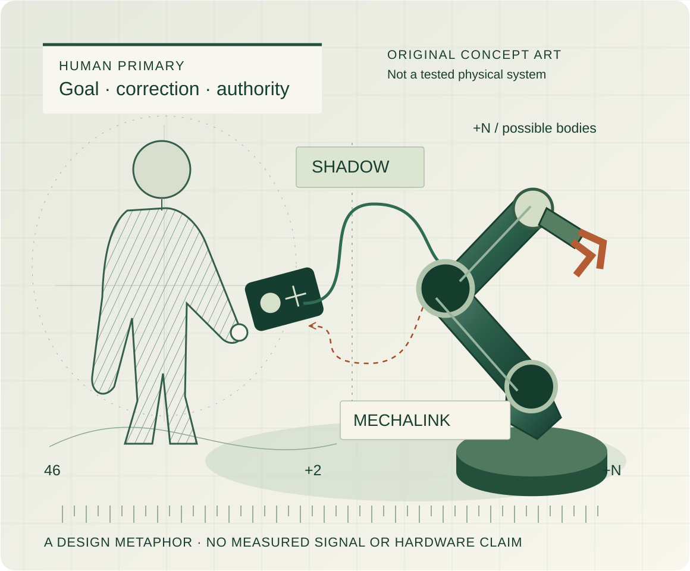

VISUAL EDITION V6 · RESEARCH IN PROGRESS
Independent human-centered robotics research
Beyond
one body.
Shadow and MechaLink: low-level human–robot exchange and high-level task/embodiment coordination, with separate engineering evidence and explicit scientific limits.
Visual edition V6. All artwork here is conceptual; it does not depict a tested complete physical system.
